NARC clubhouse guide
Rick Gilmore K3ROG
2019-10-21 15:07:16
Arrival procedures
- Unlock the gate. Use the small key to unlock the padlock. The larger key opens the clubhouse itself. Take the padlock with you to the shack.
- Close the gate and replace the lock bar, but do not re-lock the gate.
- If you know that others will be joining you, you may leave the gate open, but make sure to park cross-wise, blocking the past the shack. This ensures that no other driver can inadvertently drive past you and get locked behind the gate when you leave.
- Unlock door of the shack using the larger of the two keys. There is one lock above the door handle. Turn the key to the left (counterclockwise) to unlock the door.
- There are light switches on the left just inside the door.
- Put the padlock and locking bar on the desk near the door.
- Turn up the heat, if needed.
- Go to the breaker box near the southeast corner of the shack (on your right as you enter the shack). By default, we leave breakers 7-14 – the baseboard and north wall 240 V heaters – off, and the remainder on.
- Turn breakers 7-14 on by pushing the breaker lever to the left to align with the others.
- The porta potty key is on the desktop to the right of the door.
- Please text Rick K3ROG (814-777-3298), Eric W3EDP (814-867-3393), or Mike N3LI (814-404-3991) when you leave. Please report any issues that need to be addressed.
Equipment setup
IC-7610 HF Transceiver

This transceiver is currently connected to the NARC1 computer.
Equipment summary
- Icom IC-7610 (HF + 6m) transceiver
- Astron RS-35A power supply
- Elecraft KPA1500
- Elecraft power supply
- Icom SM-50 desk mic
- Clipper PTT footswitch
- Heil Pro-7 headset
- Nifty mini-manual and other manuals are located in the drawer under the radio.
- Dell PC, dual monitor set-up
- Windows 10
- WSTJ-X, JS8Call, fldigi suite
- N1MM, N3FJP
Connect equipment and power-up
- The IC-7610/NARC1 is located closest to the main door off the porch.
- Connect to the power mains.
- Power cables are located between the wooden shelf and the east wall.
- Plug the large 240 V cable (green tag) for the amplifier power supply into the 240 V wall outlet.
- Plug the smaller 120 V cable for the Uninterrupted Power Supply (UPS) into the 120 V wall outlet.
- Connect the radio to a suitable antenna.
Before you power up the radio, connect it to a suitable antenna. The antenna connections are located on the north wall, near the repeater cabinet. Choose the PL-259 connector with the yellow IC-7610 tag. Plug the cable from the radio into the cable connector for one of the antennas, for example, one of the triband Yagis for 10-20 m. Please do not remove the N/PL-259 connectors from the antenna feedlines.
Power up the UPS by pushing the front button. The green power light should illuminate.
Power up the Astron RS-35A power supply that powers the IC-7610/NARC1. The power supply is located to the right of the Elecraft KPA1500 amplifier.
Power up the IC-7610/NARC1 by pressing and briefly holding the power button.
IC-7610 power switch
- Power up the Elecraft KPA1500 amplifier
The IC-7610/NARC1 is connected to the Elecraft KPA1500 amplifier. The power supply for the KPA1500 is under the desk on a small footstool. Check that the KPA1500 power supply is on. If necessary, power-up the power supply by hitting the power switch on the upper rear left side of the power supply. When the amplifier power switch is on, you will see 3 green lights: AC on, High V supply, Low V supply. Power up the KPA1500 by pressing the on switch on the lower right hand side of the KPA1500 front panel.

KPA1500 Power Switch
Log-in to the computer
Power up the PC by pressing the power button on the front panel.
Log-in using the appropriate password
The IC-7610/NARC1 is connected via USB2 to the NARC1 PC. Open your logging program of choice. NARC has licenses for N1MM and N3FJP’s Amateur Contact Log.
To operate digital modes (e.g., FT8/FT4, JS8Call, fldigi), open those programs. See instructions for operating these modes in separate documents.
Basic controls
- Audio levels for the two VFOs are controlledd via separate knobs on the left side of the front panel.
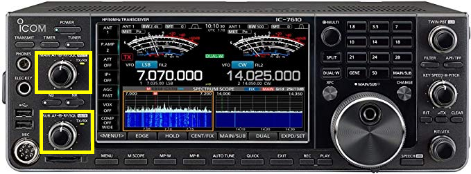
- You may switch operating bands in one of two ways:
- Buttons located on the right side of the front panel
- Pressing the frequency on the touch screen.
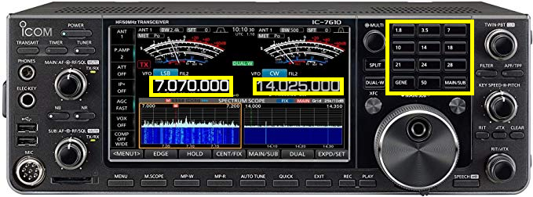
- Switch operating modes by pressing the mode button on the touch panel.
This opens a window where you can choose the mode of operation. - Hit the arrow button to close the window and save your choice.
- Turn digital noise reduction on or off by pressing the NR button on the left side of the front panel. When NR is on, the NR button will be illuminated.
- To adjust the amount of noise reduction, press and hold the NR button to open a window on the upper right corner of the touch panel display.
- Turn the MULTI key to adjust the level of noise reduction.
- Close the NR window by pressing the MULTI key or by pressing the NR button.
- Adjust preamplifier (
P.AMP) settings, automatic gain control (AGC), Intercept Point (IP+),VOX, and compression (COMP) settings by pressing the corresponding button on the left side of the touch/display screen.
- Adjust touch/display screen settings via the MENU1/MENU2 buttons at the bottom of the touch/display screen.
- Select receive filter settings via the
FILTERbutton on the right side of the front panel, below theTWIN PBTknob.
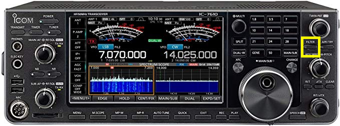
- Set RF power by pressing the MULTI button to open a window on the display/touch screen. Press the RF POWER panel to select it, and adjust the output power by turning the MULTI knob.
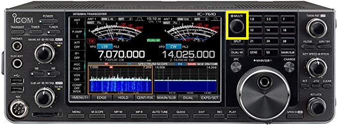
Elecraft K3S

The K3S is currently connected to the NARC2 computer. The Elecraft K3S/NARC2 is located in the middle of the long desk to the right of the IC-7610/NARC1 station.
Equipment summary
- Elecraft K3S (HF + 6m) transceiver
- Astron RS-35A power supply
- Elecraft KPA1500
- Elecraft power supply
- Elecraft P3 Panadapter
- Footswitch on the floor.
- Heil Pro 7 headset.
- Bencher BY-1 paddle.
- Windows 10 PC, single monitor set-up, dual monitor capable
- WSTJ-X, JS8Call, fldigi, N1MM, N3FJP
Connect and power-up
- Connect to the power mains.
Power cables are located between the wooden shelf and the east wall. Plug the large 240 V cable (orange tag) for the amplifier power supply into the 240 V wall outlet. The UPS is located on the window sill behind the NARC2 station. Plug the smaller 120 V cable for the Uninterrupted Power Supply (UPS) into the 120 V wall outlet.
- Connect the radio to a suitable antenna.
Before you power up the radio, connect it to a suitable antenna. The antenna connections are located on the north wall, near the repeater cabinet. Choose the PL-259 connector with the orange K3S tag. Plug the cable from the radio into the cable connector for one of the antennas, for example, one of the triband Yagis for 10-20 m. Please do not remove the N/PL-259 connectors from the antenna feedlines.
- Power up the UPS.
Press and hold the UPS POWER button until you hear 2 beeps.
- Power up the Astron RS-35A power supply
The power supply is located to the far right of the NARC2 station. Press the red ‘on’ switch on the lower left front part of the panel.
- Power up the K3S.
The POWER button is on the left side of the left side of the rig front panel.
- Power up the P3 Panadapter.
This step is mandatory! The K3S will not transmit if the P3 is not powered up.
- Power up the Elecraft KPA1500 amplifier
The IC-7610/NARC1 is connected to the Elecraft KPA1500 amplifier. The power supply for the KPA1500 is under the desk on a small footstool. Check that the KPA1500 power supply is on. If necessary, power-up the power supply by hitting the power switch on the upper rear left side of the power supply. When the amplifier power switch is on, you will see 3 green lights: AC on, High V supply, Low V supply. Power up the KPA1500 by pressing the on switch on the lower right hand side of the KPA1500 front panel.
KPA1500 Power Switch
Log-in to the computer
Power up the NARC2 PC by pressing the power button on the front panel.
Log-in using the appropriate password
The K3S/NARC2 is connected via USB2 to the NARC2 PC. Open your logging program of choice. NARC has licenses for N1MM and N3FJP’s Amateur Contact Log.
To operate digital modes (e.g., FT8/FT4, JS8Call, fldigi), open those programs. See instructions for operating these modes in separate documents.
Elecraft KPA1500
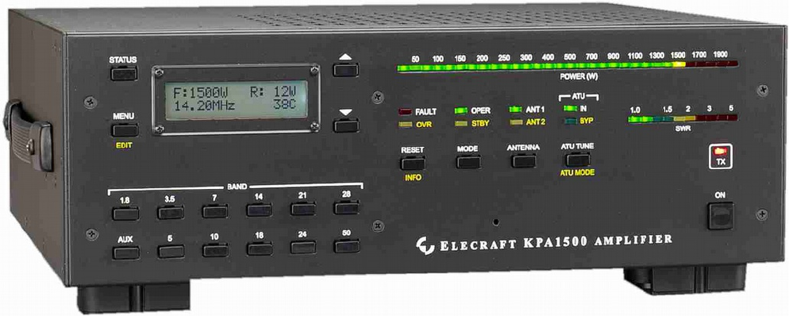
Summary
- The Elecraft KPA1500 is a solid state 1500 W amplifier.
Operating the KPA1500
Confirm connections.
The amplifier should be connected via the ANT 1 input to an antenna. The feedlines hang from hooks near the North wall of the station and each has label indicating which radio station (NARC-1/IC-7610, NARC-2/K3S, or NARC-3) the feedline services.
If the amplifier is connected to an antenna, you may power-up by pressing the button on the front of the amplifier.
Confirm that the antenna input selector is set to ANT 1.
The amplifier should be connected to the IC-7610 or K3S via a short coax patch cable. The default configuration is from the amplifier to the transceiver’s ANT 1 port.
Ensure that antenna tuner is in-line
NARC offers a variety of resonant antennas for your use, but it is prudent to use the automatic antenna tuner that the KPA1500 provides.
On the KPA1500 front panel, press the ATU TUNE/ATU MODE button to select the ATU IN mode (green light).
Determine the band and power needs for your mode of operation
< 100 W operation
Most digital modes (FT8/FT4, JS8Call, fldigi) are also conventionally low power (< 100 W) modes. For these modes, you will want to operate the amplifier in standby (STBY) mode, but with the antenna tuner in-line.
> 100 W operation
For modes where power > 100 W is desired (e.g., phone, CW, RTTY), you will need to tune-up the amplifier.
Operating procedures
Digital modes
WSTJ-X
WSJT-X on IC-7610/NARC1
The current installed version as of 2019-10-20 is v2.1.0.
On the PC
- Open WSJT-X (Icon is on desktop.)
WSTJ-X opens to the same operating frequency as the rig is on when you start.
- Confirm Settings
It’s not essential to confirm the settings each time you start up, but doing so will make sure that you are able to operate without difficulty.
Open the Configurations menu and select a configurations set.
Standard Opsis a good place to start.Open Settings from the File menu
General tab:
Set my Call to your personal callsign unless you have permission to use the club callsign (W3YA). Set any Display or Behavior settings per your personal preferences.
Radio tab:
Change these at your own risk.
Rig: Icom IC-7610 CAT Control: COM3 Baud Rate: 19200 Data Bits: 8 bits Stop Bits: none Handshake: none Force Control Lines: unset
PTT method: CAT (port should be COM3) Mode: Data/pkt Split operation: Rig or Fake It
You may want to check/confirm that rig control is working by pushing the Test CAT button in this panel. If the button turns green, then the rig and computer are communicating.
You may also want to check that PTT is working by pressing the Test PTT button. Make sure you have adjusted the rig’s power output to a low level (1-5 W) before testing. On the IC-7610, press the MULTI button, touch the RF Power panel on the touch screen, and turn the MULTI button to set desired output power.
Audio tab:
Input: USB Audio Codec Output: USB Audio Codec
Reporting tab
You may want to set the Op Call to your own callsign.
Advanced tab:
Check or uncheck Special Operating Activity per situation, for example ARRL Field Day or the NA VHF Contest.
You may now close the Settings window by pressing the OK button.
Switch to the desired mode (e.g., FT8) from the Mode menu. Select the desired operating band and default frequency from the dropdown menu on the lower left side of the main WSJT-X application panel.
- Check computer clock accuracy
Open a browser; visit https://time.is
If your time synch is within .5s of the correct time, you may proceed.
If you have a cellular hotspot, you may wish to connect it to the hub. Power the hub, wait for the computers to establish an internet connection, and allow the Meinberg time server application to update the time.
If you are decoding signals, then all is well.
On the IC-7610
- Confirm rig is in USB Data 2 (USB-D2) mode.
To change the mode, press the mode indicator on the touch screen to open a window to toggle the mode (USB/LSB) to USB. Unless you are sure that your digital mode uses LSB, select USB. Press and hold the DATA button to switch between D1, D2, and D3 data mode connectors. D2 is configured for use via USB.
- Set your bandwidth to filter 1 (wide) by pressing the FILTER button located on the right side of the front panel.
You may adjust the filter settings by pressing and holding the filter button on the right side of the rig control panel. Press the arrow/return button on the display/touch screen to save and apply the filter settings.
- Set other settings
The following settings can be changed via buttons on the left side of the touch/display screen.
- Preamp (P.AMP) off
Press the P.AMP button to cycle through the settings (OFF, P.AMP 1, P.AMP 2)
- ATT off
Press the ATT button to cycle through the attenuator settings (OFF, 6 dB, 12 dB, 18 dB)
- IP+ off
Press the IP+ button to select ON or OFF
- Turn AGC off
Press and hold the AGC button on the display/touch screen. This opens a panel. Under the SSB column, select the SLOW setting. Adjust the AGC level downward until the indicator says OFF. Press the arrow/return button on the display/touch screen to enter the setting.
VOX off
Noise reduction (NR) off
Press the NR button on the left side of the front panel to turn off the illuminator.
- Noise blanker (NB) off
Press the NB button on the left side of the front panel to turn off the illuminator.
- Set desired RF power output using MULTI knob.
Press and hold the MULTI button to open a window on the touch/display screen. Press the RF POWER panel and rotate the MULTI button to set RF power.
Remember, WSJT-X is a weak signal mode. Less than 50 W is plenty.
On KPA1500
- For < 100W output, set amplifier to STBY mode (yellow light) by pressing the MODE button to toggle between STBY (yellow light) and OPER (green).
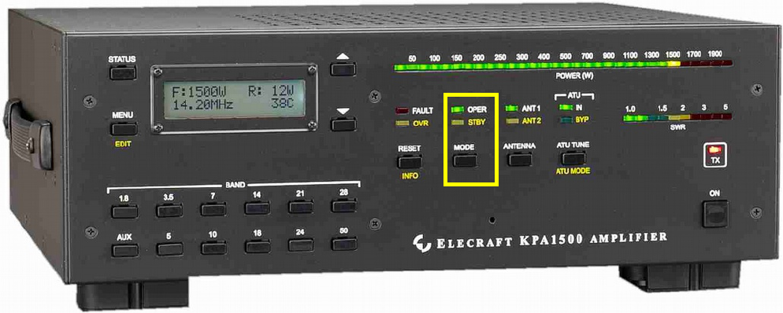
For higher power output, follow separate instructions for tuning the KPA1500 amplifier.
- Confirm ANT1 is output (press ANTENNA to toggle).

- Confirm ATU is IN (not BYP) by pressing and holding ATU TUNE button.
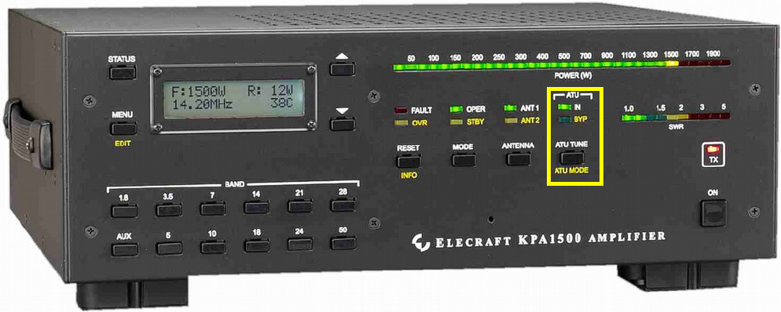
Have fun!
Operating hints
- Make sure that your audio in level is not too high.
There are several ways to adjust this: - Adjust the RF/SQL button on the rig
WSTJ-X on K3S/NARC2
On the PC
- Open WSTJ-X (Icon is on desktop).
Note: If you will be using the rig regularly, you may wish to clone an existing Configuration set and edit it for your particular use. From the Configurations menu, choose a source Configuration, e.g., Standard Ops, select “Clone”, then from the Configurations menu, choose the clone, and switch to it by selecting the “Switch To” menu item. When WSTJ-X reopens with the new Configurations set, open Settings from File/Settings menu and confirm the settings.
- Confirm settings
(It’s not essential to confirm the settings each time you start up, but doing so will make sure that you are able to operate without difficulty.)
Open Settings from File/Settings menu and confirm the settings.
General tab:
Set my Call to your personal callsign unless you have permission to use the club callsign (W3YA). Set any Display or Behavior settings per your personal preferences.
Radio tab:
Rig: Elecraft K3S CAT Control: COM3 Baud Rate: 19200 8 bits, 1 stop bit, none
Force Control Lines: unset PTT method: CAT (port should be COM3) Mode: Data/pkt Split operation: Rig or Fake It
Audio tab: Input: USB Audio Codec Output: USB Audio Codec
Advanced tab:
Check or uncheck Special Operating Activity per situation.
- Check clock accuracy
Open browser, visit https://time.is
If you have a cellular hotspot, connect it to the HUB, power the HUB, wait for the computers to establish an internet connection, and allow the Meinberg time server to update the time
On K3S
- Confirm rig is in Data A mode (if necessary, hit MODE button to cycle to data mode; indicator will be near Tx icon on right side of the display).
Press (and hold) the DATA MD button on the middle right of the panel. Using the VFO B knob, select DATA A (not AFSK A). Press DATA MD again to enter change.
Set bandwidth to maximum (4 kHz) by rotating WIDTH knob (above and to the left of the VFO A knob) clockwise until the screen shows a 4.0 bandwidth.
Set MIC SEL to LINE; set level to 30 (midrange)
Set ALC.
From within WSTJ-X, hit Tune button; adjust audio level from computer “speaker” slider and WSTJ-X Power slider until ALC meter reads about 4 bars. Then adjust K3S mic gain to produce 4 bars solid with the 5th bar flickering.
Adjust transmit power via Power knob on K3S. Remember, WSJT-X is a weak signal mode. Less than 50 W is plenty.
On KPA1500
- For < 100W output, set amplifier to STBY mode (yellow light) by pressing the MODE button to toggle between STBY (yellow light) and OPER (green).
For higher power output, follow separate instructions for tuning the KPA1500 amplifier.
- Confirm ANT1 is output (press ANTENNA to toggle).
- Confirm ATU is IN (not BYP) by pressing and holding ATU TUNE button.
Have fun!
fldigi
fldigi on IC-7610/NARC1
As of 2019-10-20, the installed version is 4.1.03.
On the PC
- Open fldigi. (Icon is on desktop.)
Fldigi is configured to use the flrig program to interface between the radio and the computer. Flrig should open automatically a few seconds after fldigi opens. If flrig shows the current VFO frequency and so does fldigi, the two devices are talking to one another.
- Confirm Settings
It’s not essential to confirm the settings each time you start up, but doing so will make sure that you are able to operate without difficulty.
- In flrig, open the Config menu and select Setup > Transceiver. This opens a separate window.
Rig: IC-7610 Ser Port: COM3 Baud: 19200 (Stop bits:) 1 PTT via CAT checked
CV-V adr:0x98
You may now close the Configuration window by pressing the CLOSE button or close window (X) button.
- Check receive operations
- Turn to a known PSK31 frequency, for example, 14070.
- From the Op Mode menu, select PSK > BPSK-31
If all is well, you should see decodes in the left hand window and signals in the waterfall below.
- Configure your operational settings.
- From the Configure menu, select UI > Operator to open a window.
- Under the Operator tab set Station Callsign, Operator Callsign, Operator Name, Antenna, Station QTH, Station Locator and other items.
On the IC-7610
- Confirm rig is in USB Data 2 (USB-D2) mode.
To change the mode, press the mode indicator on the touch screen to open a window to toggle the mode (USB/LSB) to USB. Unless you are sure that your digital mode uses LSB, select USB. Press and hold the DATA button to switch between D1, D2, and D3 data mode connectors. D2 is configured for use via USB.
- Set your bandwidth to filter 1 (wide) by pressing the FILTER button located on the right side of the front panel.
You may adjust the filter settings by pressing and holding the filter button on the right side of the rig control panel. Press the arrow/return button on the display/touch screen to save and apply the filter settings.
- Set other settings
The following settings can be changed via buttons on the left side of the touch/display screen.
- Preamps (P.AMP) off
Press the P.AMP button to cycle through the settings (OFF, P.AMP 1, P.AMP 2)
- ATT off
Press the ATT button to cycle through the attenuator settings (OFF, 6 dB, 12 dB, 18 dB)
- IP+ off
Press the IP+ button to select ON or OFF
- Turn AGC off
Press and hold the AGC button on the display/touch screen. This opens a panel. Under the SSB column, select the SLOW setting. Adjust the AGC level downward until the indicator says OFF. Press the arrow/return button on the display/touch screen to enter the setting.
VOX off
Noise reduction (NR) off
Press the NR button on the left side of the front panel to turn off the illuminator.
- Noise blanker (NB) off
Press the NB button on the left side of the front panel to turn off the illuminator.
- Set desired RF power output using MULTI knob.
Press and hold the MULTI button to open a window on the touch/display screen. Press the RF POWER panel and rotate the MULTI button to set RF power.
On KPA1500
- For < 100W output, set amplifier to STBY mode (yellow light) by pressing the MODE button to toggle between STBY (yellow light) and OPER (green).
For higher power output, follow separate instructions for tuning the KPA1500 amplifier.
- Confirm ANT1 is output (press ANTENNA to toggle).
- Confirm ATU is IN (not BYP) by pressing and holding ATU TUNE button.
Have fun!
fldigi on the K3S/NARC2
As of 2019-10-20, the installed version is 4.1.03.
On the PC
- Open fldigi. (Icon is on desktop.)
Fldigi is configured to use the flrig program to interface between the radio and the computer. Flrig should open automatically a few seconds after fldigi opens. If flrig shows the current VFO frequency and so does fldigi, the two devices are talking to one another.
- Confirm Settings
It’s not essential to confirm the settings each time you start up, but doing so will make sure that you are able to operate without difficulty.
- In flrig, open the Config menu and select Setup > Transceiver. This opens a separate window.
Rig: K3 Ser Port: COM3 Baud: 19200 (Stop bits:) 1 PTT via CAT checked
You may now close the Configuration window by pressing the CLOSE button or close window (X) button.
- Check receive operations
- Turn to a known PSK31 frequency, for example, 14070.
- From the Op Mode menu, select PSK > BPSK-31
If all is well, you should see decodes in the left hand window and signals in the waterfall below.
- Configure your operational settings.
- From the Configure menu, select UI > Operator to open a window.
- Under the Operator tab set Station Callsign, Operator Callsign, Operator Name, Antenna, Station QTH, Station Locator and other items.
On the K3S
- Confirm rig is in Data A mode
- (if necessary, hit MODE button on right side of front panel to cycle to DATA mode; indicator will be near Tx icon on right side of the display).
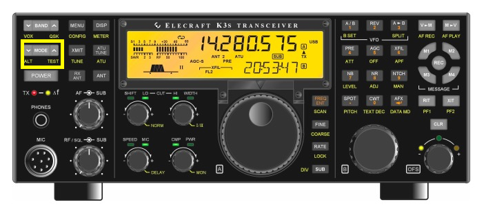
Press (and hold) the DATA MD (AFX) button on the middle right of the panel.
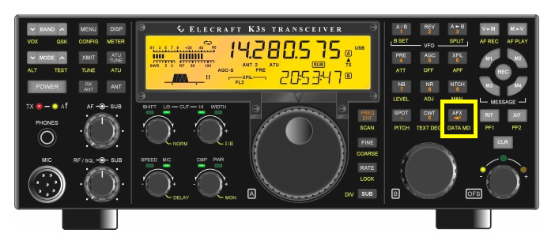
Using the VFO B knob, select DATA A (not AFSK A). Press DATA MD again to enter change.
- Set bandwidth to maximum (4 kHz) by rotating WIDTH knob (above and to the left of the VFO A knob) clockwise until the screen shows a 4.0 bandwidth.
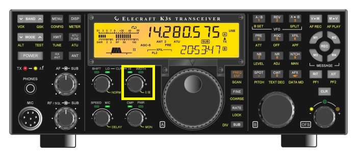
- Press SPEED/MIC button to MIC. When LINE appears, set level to 30 (midrange).
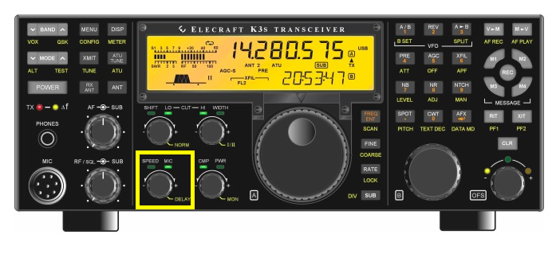
- Set ALC.
From within WSTJ-X, hit Tune button; adjust audio level from computer “speaker” slider and WSTJ-X Power slider until ALC meter reads about 4 bars. Then adjust K3S mic gain to produce 4 bars solid with the 5th bar flickering.
Adjust transmit power via Power knob on K3S. Remember, WSJT-X is a weak signal mode. Less than 50 W is plenty.
On KPA1500
- For < 100W output, set amplifier to STBY mode (yellow light) by pressing the MODE button to toggle between STBY (yellow light) and OPER (green).
For higher power output, follow separate instructions for tuning the KPA1500 amplifier.
- Confirm ANT1 is output (press ANTENNA to toggle).
- Confirm ATU is IN (not BYP) by pressing and holding ATU TUNE button.
Have fun!
JS8Call
Installed; guide forthcoming.
Phone
SSB on IC-7610/NARC1
On the PC
You do not need to use the PC to operate phone, but you may want to use the PC for logging.
Power up the NARC2 PC by pressing the power button on the front panel.
Log-in using the appropriate password
The K3S/NARC2 is connected via USB2 to the NARC2 PC. Open your logging program of choice. NARC has licenses for N1MM and N3FJP’s Amateur Contact Log.
N1MM
Please do not update N1MM without asking Mike N3LI, Rick K3ROG, Eric W3EDP first.
Amateur Contact Log (N3FJP)
You may need to download the specific log for the contest you want to work.
On the IC-7610
- Confirm the rig is in SSB mode.
To change the mode, press the mode indicator on the touch screen to open a window to toggle the mode (USB/LSB).
Remember, the convention is to use LSB below 10 MHz except for 60m.
- Set your bandwidth by pressing the FILTER button located on the right side of the front panel.
You may adjust the filter settings by pressing and holding the filter button on the right side of the rig control panel. Press and hold the FILTER button on to save and apply the filter settings.
Check audio output levels.
Set desired power output using MULTI knob.
Press and hold the MULTI button to open a window on the touch/display screen. Press the RF POWER panel and rotate the MULTI button to set RF power.
On KPA1500
- For < 100W output, set amplifier to STBY mode (yellow light) by pressing MODE button to toggle between STBY and OPER.
For higher power output, follow separate instructions for tuning the KPA1500 amplifier.
Confirm ANT1 is output (press ANTENNA to toggle).
Confirm ATU is IN (not BYP) by pressing and holding ATU TUNE button.
Have fun!
CW
RTTY
Departure procedures
- Power down all the equipment you used.
- Turn off the UPS.
- For the NARC1/IC-7610 station, press and hold the UPS Power button until you hear a single beep.
- For the NARC2/K3S station, press and hold the UPS Power button until you hear one long and two short beeps.
- Unplug the UPS from the wall sockets.
- Unplug the 220 V power amplifier power supplies from the wall sockets.
- Unplug the antenna rotator power supplies from the wall sockets.
- Turn breakers 7-14 – the baseboard and north wall 240 V heaters – off.
- Return the porta potty key to the desktop to the right side of the door.
- Take the padlock to the gate with you and the L-shaped latch if you did not leave it in the gate.
- As you leave the shack, close and lock the door by turning the key to the right (clockwise). Check again to confirm that the door is closed and locked.
- As you reach the gate, stop, remove the lock bar, and swing the gate out of the way.
- Drive through and stop just outside the gate.
- Swing the gate back into closed position. Place the lock bar in position, and lock the gate.
- Please text Rick K3ROG (814-777-3298), Eric W3EDP (814-867-3393), or Mike N3LI (814-404-3991,) when you leave. Please report any issues that need to be addressed.